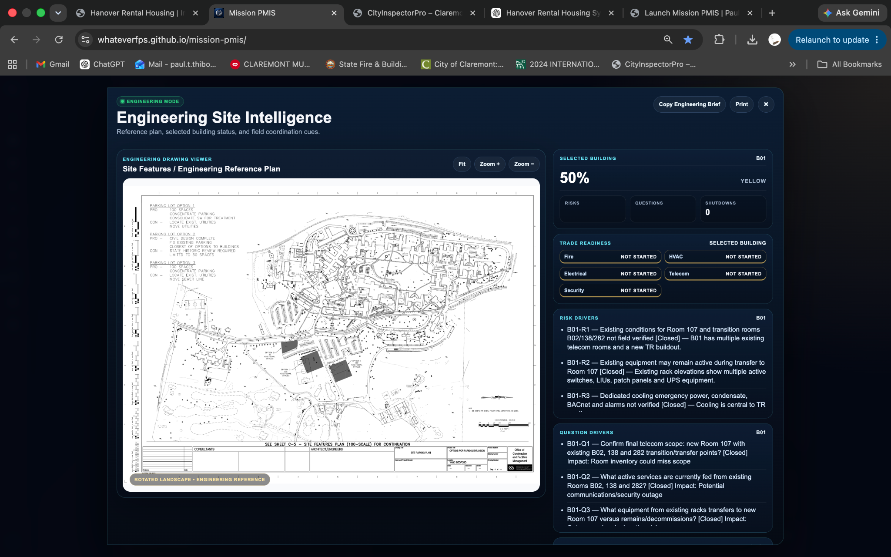
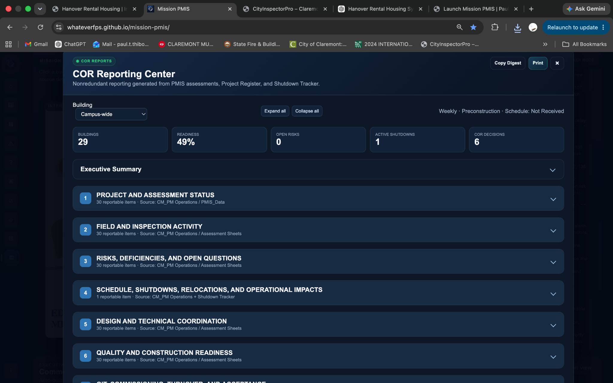
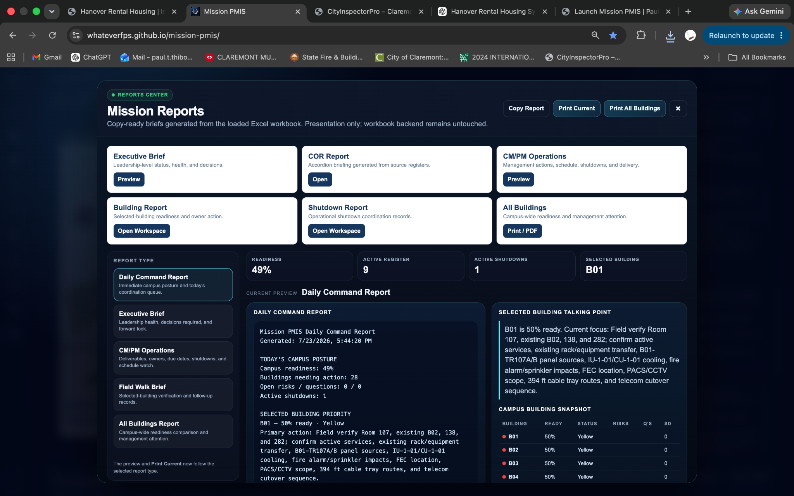
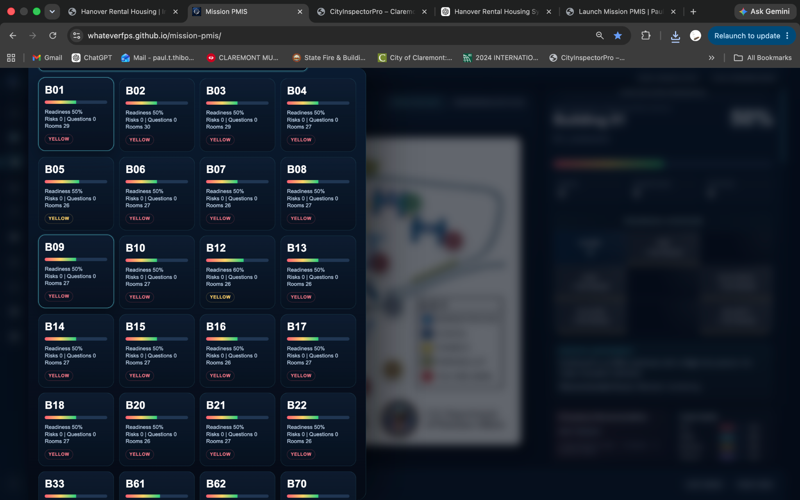
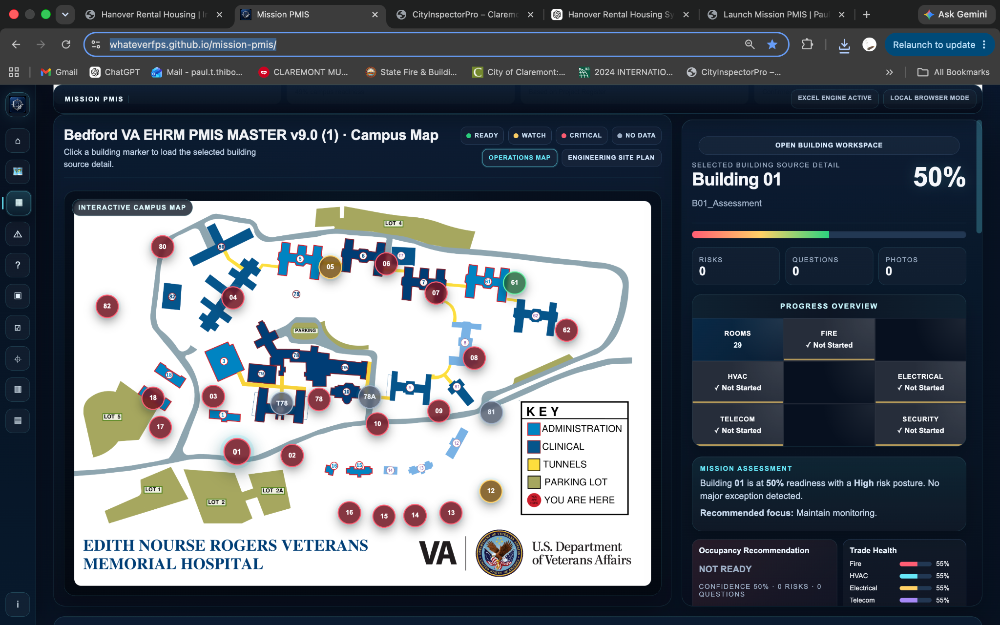
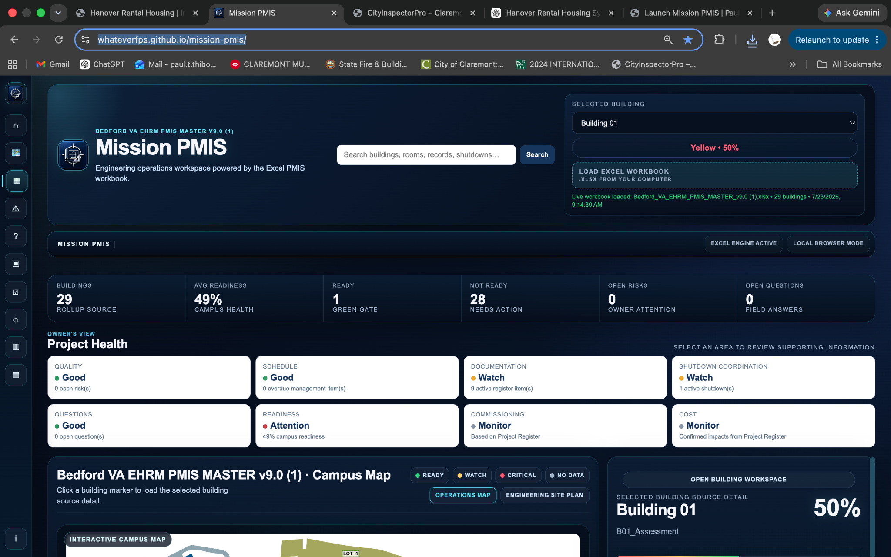

Mission PMIS
Mission PMIS is an operational Project Management Information System engineered for a federal healthcare modernization program. Rather than replacing existing workflows, the platform transforms construction data into actionable engineering intelligence by combining executive reporting, quality assurance, inspection management, campus visualization, and project analytics into a unified operational workspace.

Project Overview
Mission PMIS was designed around a simple philosophy: keep the tools the project already trusts while dramatically improving visibility, organization, and decision making. Excel remains the authoritative data source while the web application provides an intuitive operational interface for engineers, project managers, and executive leadership.
Interactive Campus Map
Navigate every facility from a single campus view. Selecting a building immediately opens engineering data, readiness information, inspections, risks, and project health for that location.

Engineering Site Intelligence
Engineering mode provides detailed operational awareness, allowing project teams to monitor inspections, readiness, quality issues, shutdown coordination, and outstanding work from a single workspace.

COR Reporting Center
Purpose-built reporting tools summarize project progress into executive-ready information that supports Owner representatives and Contracting Officer Representatives during project oversight.

Mission Reports
Generate consistent project reports from centralized data while reducing manual effort and improving reporting consistency across multiple stakeholders.

Building Intelligence Dashboard
Each building maintains its own operational profile, combining readiness status, quality tracking, inspections, documentation, and engineering metrics into a single dashboard.

Project Launcher
The application opens into an intuitive command interface designed for daily project use, allowing users to immediately access reports, engineering workspaces, and project intelligence.

Technology
Skills Demonstrated
Designing software around operational workflows.
Transforming large datasets into usable interfaces.
Creating meaningful visual reporting for decision makers.
Applying software to complex capital projects.
Reducing repetitive manual coordination tasks.
From concept through implementation and deployment.